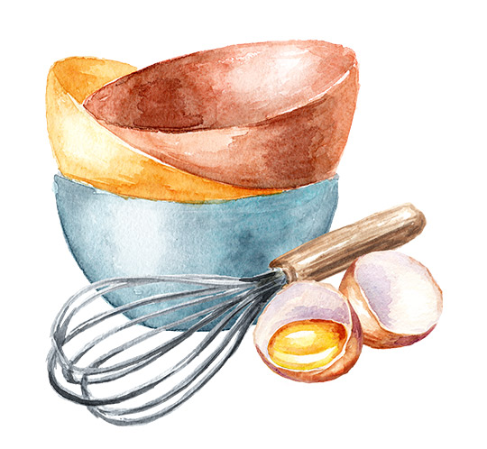

 Cooking as a hobby is not only a practical life skill but also a fantastic way to express creativity, unwind, and share delightful meals with loved ones. Whether you're completely new to the kitchen or looking to expand your culinary repertoire, there are numerous ways to dive into the world of cooking.
Begin with easy-to-follow recipes that require minimal ingredients and basic techniques. This will help you build confidence and gradually develop your skills. As you become more comfortable, you can experiment with more complex dishes.Cooking shows and online tutorials are excellent resources for learning new techniques and getting inspired. Platforms like YouTube, Netflix, and cooking blogs offer a plethora of instructional videos that cater to all skill levels. Watching professional chefs and home cooks can provide valuable insights and spark your creativity.
Equipping your kitchen with the right tools and fresh ingredients can significantly enhance your cooking experience. Invest in essential items like a good chef's knife, cutting boards, and non-stick pans. Fresh, high-quality ingredients will elevate your dishes and make cooking more enjoyable.